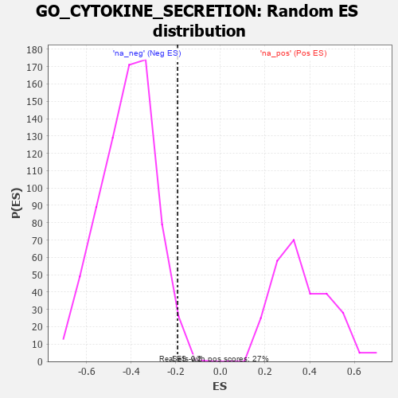

| | | Dataset | 7d |
| Phenotype | NoPhenotypeAvailable |
| Upregulated in class | na_neg |
| GeneSet | GO_CYTOKINE_SECRETION |
| Enrichment Score (ES) | -0.19213173 |
| Normalized Enrichment Score (NES) | -0.459219 |
| Nominal p-value | 0.9904241 |
| FDR q-value | 1.0 |
| FWER p-Value | 1.0 |
Table: GSEA Results Summary
 Fig 1: Enrichment plot: GO_CYTOKINE_SECRETION
Fig 1: Enrichment plot: GO_CYTOKINE_SECRETION
Profile of the Running ES Score & Positions of GeneSet Members on the Rank Ordered List
| PROBE | GENE SYMBOL | GENE_TITLE | RANK IN GENE LIST | RANK METRIC SCORE | RUNNING ES | CORE ENRICHMENT | | 1 | GLMN | | | 632 | 0.583 | 0.0521 | No |
| 2 | SRC | | | 1128 | 0.459 | 0.0933 | No |
| 3 | SYK | | | 2186 | 0.278 | 0.0232 | No |
| 4 | MIF | | | 2357 | 0.252 | 0.0587 | No |
| 5 | TLR1 | | | 2517 | 0.224 | 0.0893 | No |
| 6 | DHX9 | | | 3693 | 0.044 | -0.0485 | No |
| 7 | SYT11 | | | 3732 | 0.036 | -0.0450 | No |
| 8 | IFIH1 | | | 3919 | 0.006 | -0.0669 | No |
| 9 | DDX58 | | | 3998 | -0.007 | -0.0751 | No |
| 10 | LRRK2 | | | 4467 | -0.087 | -0.1142 | No |
| 11 | DRD2 | | | 5088 | -0.221 | -0.1422 | Yes |
| 12 | FZD5 | | | 5386 | -0.292 | -0.1136 | Yes |
| 13 | TLR2 | | | 5761 | -0.395 | -0.0715 | Yes |
| 14 | DYSF | | | 6481 | -0.654 | -0.0145 | Yes |
| 15 | GHSR | | | 6937 | -0.894 | 0.1299 | Yes |
Table: GSEA details [plain text format]

Fig 2: GO_CYTOKINE_SECRETION: Random ES distribution
Gene set null distribution of ES for GO_CYTOKINE_SECRETION